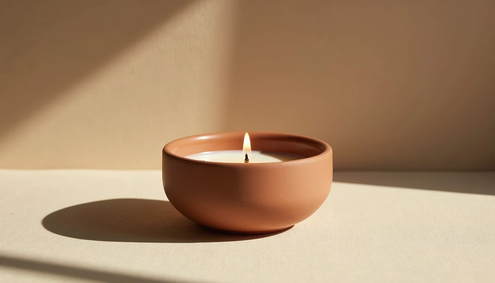

Sable & Co. — Atelier No. 02
Light it. Leave it.
Let the room change.
Why Atelier No. 02
Burn Time
Up to 45 hours
of slow light.
Material
Unglazed ceramic,
thrown by hand.
Scent Profile
Warm linen, dry cedar,
cold morning air.
"Not a mood. A decision."
The Ritual
Strike. Hold the flame until the wax catches. Set it down. The candle does the rest — for up to 45 hours.
→ Shop Atelier No. 02Material
Unglazed ceramic regulates heat differently than glass. The wax pools slowly, evenly. The vessel stays cool to the touch.
"Made to be used, not displayed."
"The ritual is complete
when the room remembers it."
Sable & Co. — Atelier No. 02